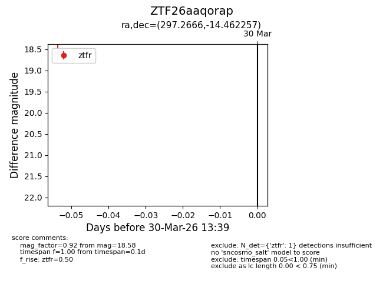
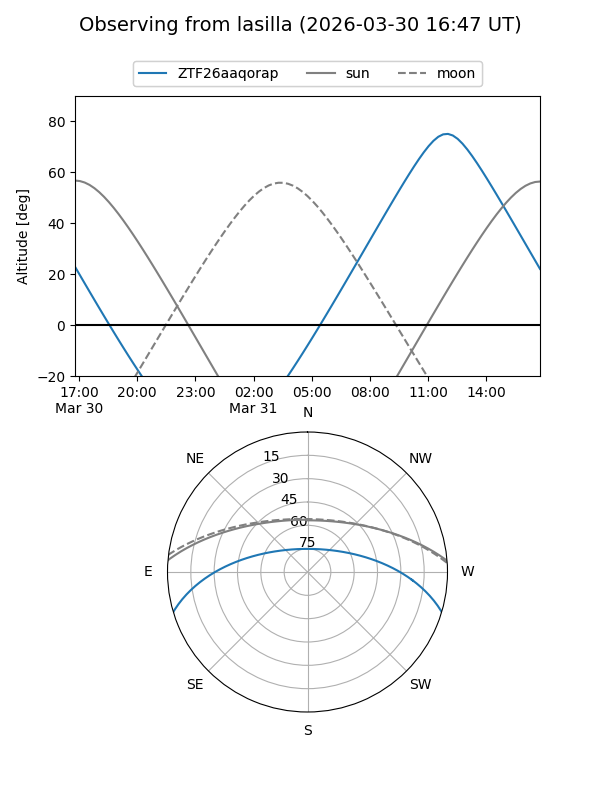
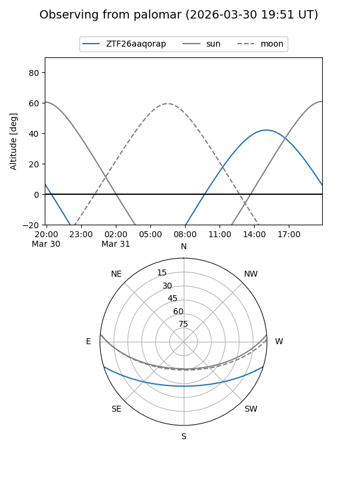
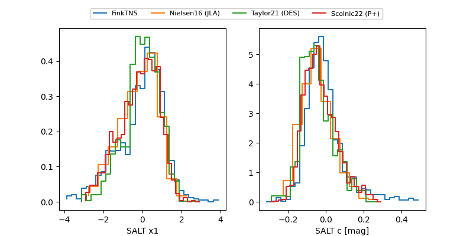

ZTF26aaqorap
Target ZTF26aaqorap at 2026-03-30 13:43
Aliases and brokers:
FINK: link
Lasair: link
ALeRCE: link
alt names
ZTF26aaqorap (ztf,fink_ztf)
Coordinates:
equatorial (ra, dec) = 297.2666,-14.46226
equatorial (HMS+DMS) = 19:49:03.99,-14:27:44.13
galactic (l, b) = (26.0972,-19.16563)
Flags:
Photometry:
last ztfr=18.58
1 ztfr detections
Lightcurve

Visibility


Additional plots
